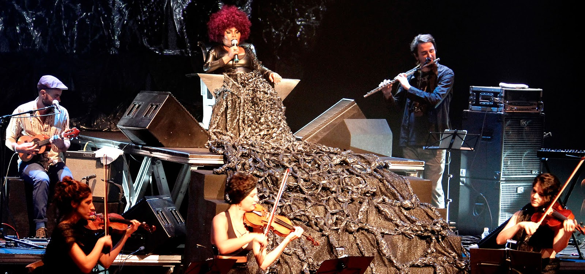

A mulher do fim do mundo

Elza Gomes da Conceição é uma cantora e compositora brasileira. Em 1999, foi eleita pela Rádio BBC de Londres como a cantora brasileira do milênio. A escolha teve origem no projeto The Millennium Concerts, da rádio inglesa, criado para comemorar a chegada do ano 2000
"Eu acho que a mulher do fim do mundo é aquela que busca, é aquela que grita, que reivindica, que sempre fica de pé. No fim, eu sou essa mulher."
Sua História
Nascida no subúrbio do Rio de Janeiro, foi forçada a se casar aos 12 anos e, aos 13, já era mãe. A sua primeira relação lhe rendeu seis filhos e duas perdas, um filho faleceu ainda no parto e o outro no primeiro ano de vida. Nos idos da década de 60, no início de sua carreira, Elza conheceu o jogador brasileiro Garrincha e, por muito tempo, teve que lidar com o estigma da mulher que acabou com o casamento do astro. Sua relação com o jogador durou 15 anos. Com ele, Elza teve um único filho que morreu vítima de um acidente de carro, em 1986, no Rio. Junto ao jogador, foi alvo de perseguição da ditadura militar, o que os fez fugirem para a Itália. O casal permanece junto até 1982, em uma relação também marcada pelo alcoolismo de Garrincha e passionalidade. Mais recentemente, em 2015, Elza Soares perdeu o filho Gilson Soares, devido a complicações de uma infecção urinária.
Foi também no ano que a cantora decidiu externar o tema da violência doméstica. No álbum A Mulher do Fim do Mundo, Elza Soares compôs a faixa “Maria da Vila Matilde”, que fala sobre a tomada de consciência diante a violência contra a mulher. A frase “Cê vai se arrepender de levantar a mão pra mim” é marcada na composição. “Depois que você é mãe, você começa a enxergar a vida de uma outra maneira. Eu sempre quis ser protetora dos meus filhos, assim como de gente que não é meu filho também. E comecei a ver que temos que enfrentar o machismo, o racismo, tudo que não presta”, afirma. Elza reconhece que passos importantes foram dados nesse sentido, mas que a caminhada ainda é longa. “Hoje temos voz. É não esmorecer, ter coragem e vamos chegar lá”, propõe.
Com 84 lançamentos em discos e cerca de 3500 músicas gravadas, a cantora reconhece que a música é um caminho para politizar a sociedade, aventar a consciência acerca dos direitos humanos e promover resistência. “A minha política é a música. Não faço a política de falar de ciclano ou beltrano, mas através do meu espaço musical”, esclarece. É o caso de seu último álbum Planeta Fome, lançado em 2019, em que a cantora discorre sobre questões sociais do País, em um misto de indignação e esperança. Para suscitar questões da saúde, educação e da fome, Elza cita o questionamento feito pelo grupo Titãs em Comida (Arnaldo Antunes, Marcelo Fromer e Sergio Brito, 1987): “Você tem fome de quê? Você tem sede de quê?”.